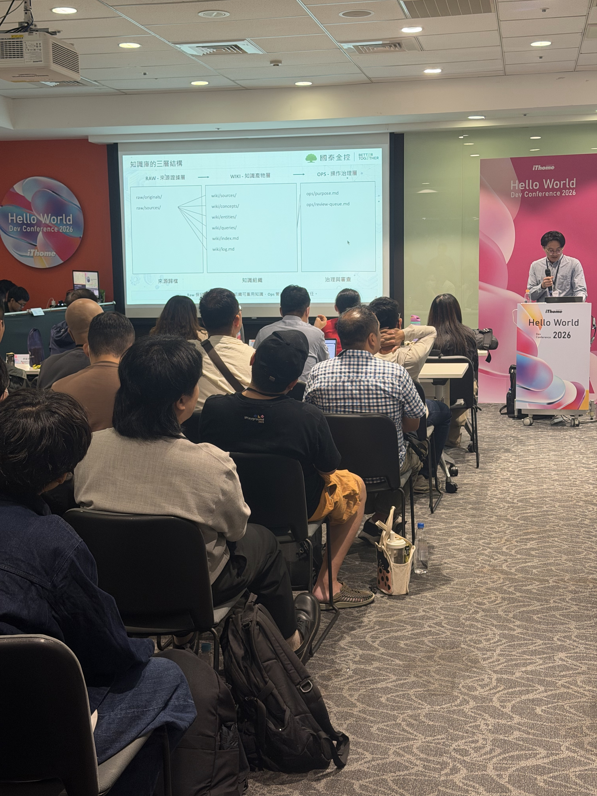

RAW ≠ WIKI ≠ OPS
Raw｜原始證據Input · originals/、sources/；保留可追溯來源
Wiki｜結構化知識Processing · concepts、entities、queries；提供上下文
Ops｜維護與治理Output · review、更新、發布；管理可用版本
更新流程：Compile → Validate → Review → Publish
Embedding 支援檢索，但不取代來源治理。
Embedding 支援檢索，但不取代來源治理。